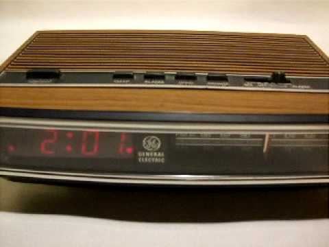
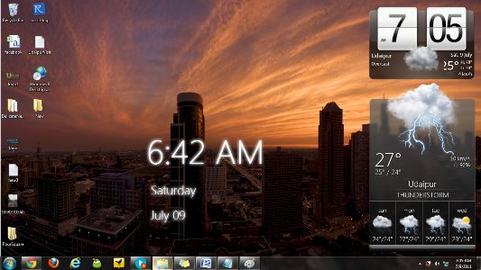
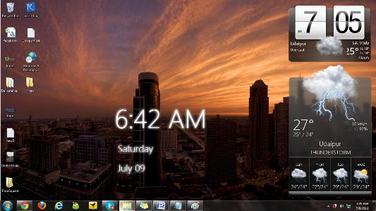

Back to homepage
Digital Clock
This presentation is on the history of the Digital Clock.
Digital Clock is in which the hours, minutes, and sometimes seconds are indicated by digits, rather than by hands on a dial.
Because digital clocks can be very small and inexpensive devices that enhance the popularity of product designs, they are often incorporated into all kinds of devices such as cars, radios, televisions, microwave ovens, standard ovens, computers and cell phones. Sometimes their usefulness is disputed: a common complaint is that when time has to be set to Daylight Saving Time, many household clocks have to be readjusted. The incorporation of automatic synchronisation by a radio time signal is reducing this problem.
Graphic Clock.1
Plato Clock

- 1904, Ansonia Clock Company
- Earliest digital time piece
- Small cylindrical-shaped objects, has digital cards with numbers which flippes as time passes.
Graphic Clock.2
The earliest patents for digital clock were held in the United States by D. E. Protzman and others.
They had a patent for digital alarm clock on October 23, 1956.
D. E. Protzman and his associates also patented another clock in 1970 which was during the information era. This was a basic clock that could tell time.
1980~2010


- 1980, Many digital clocks came with radio and an alarm
- 1990, Throughout the 20th centur digital clocks kept developing as the developed so did their style.
Now
Today, we can see digital clocks on our computer, phones, with moderized designs.
 
Graphic Clock.3

Graphic Clock.3
Karel Martens
- Karel Martens (graphic designer)
- Uses three yellow and blue spinning disks to display the hours, minutes, and seconds of the current time.
- Passing of time produces a collection of graphic arrangements
Graphic Clock.2
Wyoscan

Wyoscan
- iOS app for iPhone and iPad, reverse-engineered to slowly render the current time from left to right, scanning across the screen, completing 1 cycle every 2 seconds.